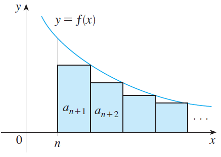

PARTE 4 · AULAS 61–68
Testes de convergência
Teste da integral, comparação, comparação pelo limite, séries alternadas, convergência absoluta, razão e raiz.
1. Teste da integral
Se \(f\) é contínua, positiva e decrescente e \(a_n=f(n)\), então a série e a integral imprópria têm o mesmo comportamento.

converge se \(p>1\) e diverge se \(p\leq1\).
2. Comparação direta
Se \(0\leq a_n\leq b_n\), uma série convergente maior força a menor a convergir; uma série divergente menor força a maior a divergir.
3. Comparação pelo limite
As duas séries têm o mesmo comportamento.
4. Alternadas
Se \(b_n\) decresce e tende a zero, a série converge.
5. Convergência absoluta
Se \(\sum|a_n|\) converge, então \(\sum a_n\) converge.
6. Razão
\(L<1\): converge absolutamente; \(L>1\): diverge; \(L=1\): inconclusivo.
7. Raiz
As conclusões são as mesmas do Teste da Razão.
Abra o ambiente 3D para explorar geometricamente os objetos relacionados a este conteúdo.